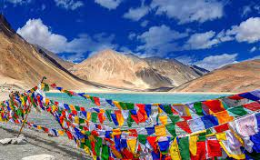

| <--Back to Invisible | ||
| Land of High Passes:Ladakh, a land of high passes and rugged landscapes, awaits those seeking an extraordinary adventure. Explore the stark beauty of the Himalayas.Ladakh is a region administered by India as a union territory[1] and constitutes an eastern portion of the larger Kashmir region that has been the subject of a dispute between India and Pakistan since 1947 and India and China since 1959.[2] Ladakh is bordered by the Tibet Autonomous Region to the east, the Indian state of Himachal Pradesh to the south, both the Indian-administered union territory of Jammu and Kashmir and the Pakistan-administered Gilgit-Baltistan to the west, and the southwest corner of Xinjiang across the Karakoram Pass in the far north. It extends from the Siachen Glacier in the Karakoram range to the north to the main Great Himalayas to the south.[11][12] The eastern end, consisting of the uninhabited Aksai Chin plains, is claimed by the Indian Government as part of Ladakh, and has been under Chinese control since 1962 | ||
| Beach Bliss:Pangong Lake Beauty:In the past, Ladakh gained importance from its strategic location at the crossroads of important trade routes,[14] but as Chinese authorities closed the borders between Tibet Autonomous Region and Ladakh in the 1960s, international trade dwindled. Since 1974, the Government of India has successfully encouraged tourism in Ladakh. As Ladakh is strategically important, the Indian military maintains a strong presence in the region. |  | |
| Monastic Marvels:The largest town in Ladakh is Leh, followed by Kargil, each of which headquarters a district.[15] The Leh district contains the Indus, Shyok and Nubra river valleys. The Kargil district contains the Suru, Dras and Zanskar river valleys. The main populated regions are the river valleys, but the mountain slopes also support pastoral Changpa nomads. The main religious groups in the region are Muslims (mainly Shia) (46%), Buddhists (mainly Tibetan Buddhists) (40%), and Hindus (12%) with the remaining 2% made of other religions.[16][17] Ladakh is one of the most sparsely populated regions in India. Its culture and history are closely related to those of Tibet. | ||